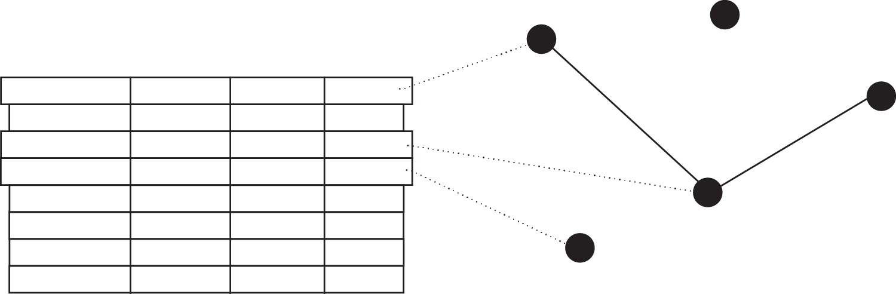
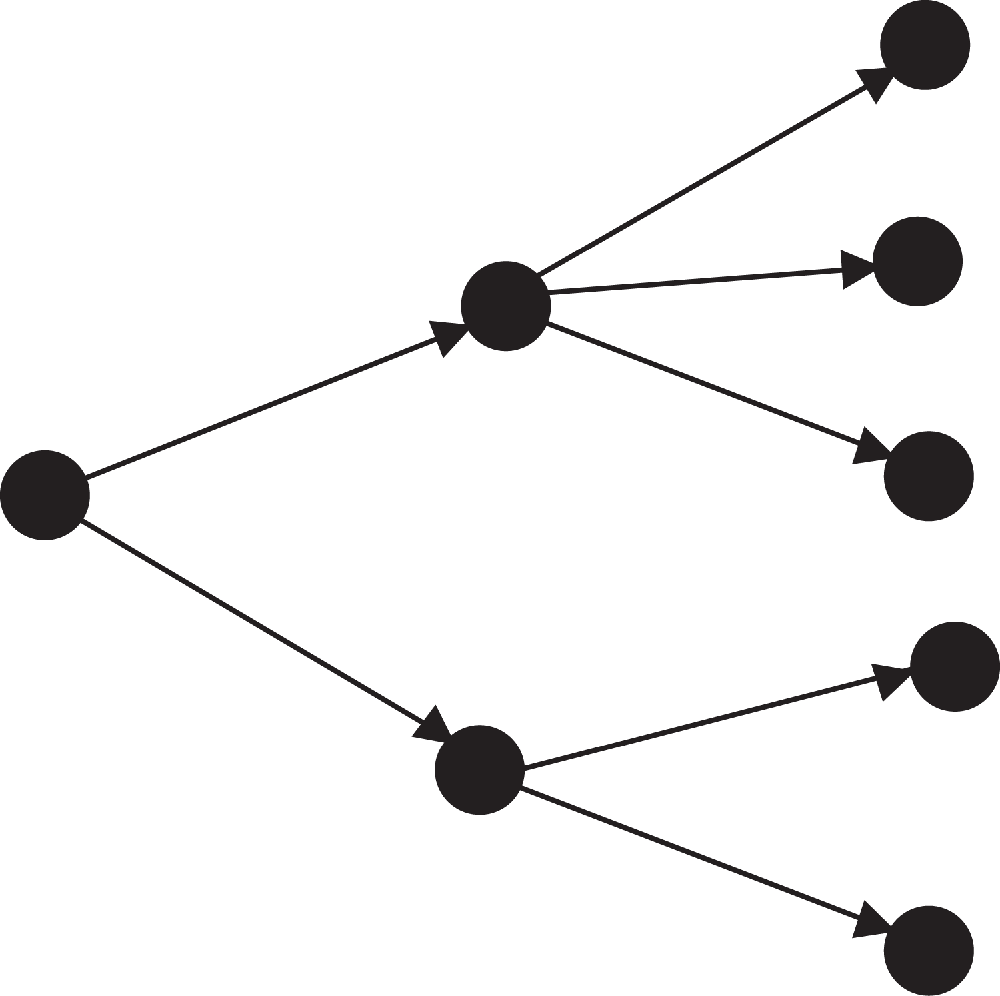
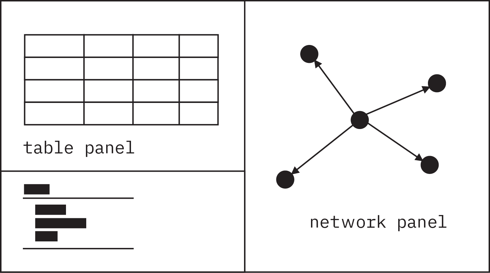
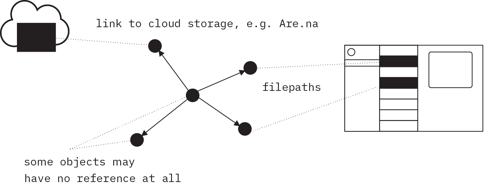

Goby 2.0
Principles & Objectives
Goby 2.0 is an interface for organizing stored files and abstract information. Goby was originally a web app that enriched Are.na blocks with metadata. But it’s now expanding to a project about structuring data stored anywhere you want according to logical patterns.
Conceptually, it is inspired by ontology design and object storage in information science, and it aspires to make this level of abstraction possible for individual users organizing their files or other data. Functionally, it is inspired by Are.na, Notion, and Obsidian, combining different traits from each and adding some functionality beyond all of them.
How are discrete “objects” represented?
Are.na Blocks and channels
Obsidian Documents in a folder or nodes in a network.
Notion Rows in a data table
Goby The same object, and all its relationships, can be represented as a table row or a node in a network graph.

Where do tags and categories fit into the data structure?
Are.na There is no categorization, only tagging (a channel is, in effect, a tag). Both objects and tags can be tagged.
Obsidian Objects can be tagged using Obsidian and categorized using file folders. Tags can be categorized (nested), but not tagged.
Notion Objects can be tagged (multiple select field) and categorized (single select field). Tags cannot be categorized or tagged.
Goby Tags, categories, and any other data structure can be represented using objects conforming to rules defined by the user. Example- nested categories: each object has a collection of children, where the children can only have one parent, and they cannot have an ancestor of their parent as a child.

How can you aggregately view and modify data?
Are.na A feed of blocks in a channel.
Obsidian Interlocking panels for file folders, document editors, and network graph.
Notion A data table.
Goby Both a table view and network graph view, in separate interlocking panels. The table view is better at representing data properties, but the network view is better at showing relationships. Both would be filterable. In addition a “rules” panel that lets you define properties for particular classes of objects.

What properties can you add to objects?
Are.na No metadata.
Obsidian Basic metadata.
Notion Comprehensive metadata.
Goby Comprehensive metadata, comparable to Notion but with a different structure (to be detailed on next page of document).

How much access/control do you have over media and datasets?
Are.na Limited control (storage is embedded in the software)
Obsidian All media/data locally accessible (storage is separated from software)
Notion Limited control (storage is embedded in the software)
Goby Storage is separated from software, and can come from any source or a combination of sources (local files, are.na blocks, etc).The goby data itself is saved in a local file with an accessible file format like JSON.

What kinds of media can it be used to organize?
Are.na Multiple media types
Obsidian Only text (markdown and pdfs)
Notion Multiple media types
Goby An object can point to any type of resource, and clicking on it will open the file/link in the software of a user’s choosing. One stretch goal is a way to display image thumbnails natively in Goby, without having to click to view files.

The panel to the right is my “experiment”.
I anticipate this being a longer-term project that I will likely continue into my second experiment. As such, I decided to focus on a very specific part of Goby’s new interface and use it as a test-ground for the UI elements I’ll need throughout the whole build.